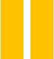

Los componentes

FONDO: Nuestros retazos
Un espacio para reflexionar sobre nuestras identidades culturales y la revaloración de nuestra diversidad cultural con una actitud intercultural.

FORMA: Uniendo retazos
Un espacio para aprender la técnica del stop motion cut-out o animación de recortes para exponer el aporte de nuestra comunidad en la consolidación de una identidad peruana diversa.
FIN: Retazos de diversidad
Un espacio para compartir nuestro sentí-pensar en torno a la situación de nuestros retazos de diversidad desde una perspectiva local, joven e intercultural.